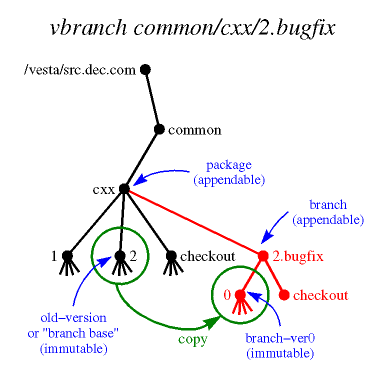

vbranch - Create a new branch of a package in the Vesta repository
vbranch [-q] [-Q] [-v] [-a | -A] [-f] [-F] [-o old-version | -O] [-m message | -M] [-h hints] [-R repos] [package/branch]
In the most common usage, only the package/branch argument is given, to specify the new branch's name.
- Description
- Flags
- Message Entry
- Configuration
- Triggers
- Limitations
- Environment Variables
- See Also
- Author
See the vesta-intro man page's Terminology section for definitions of terms, and its hoName Interpretation section for an explanation of how names are looked up.
The vbranch command creates a branch of a package in the Vesta repository. A branch is a new package that is (usually) placed as a subdirectory of the parent package, with a name based on one of the versions of the parent package (the branch base), and with a version 0 that is identical to the branch base.
For example, if common/cxx/2 is an existing package version, "vbranch common/cxx/2.bugfix" will create a new package named common/cxx/2.bugfix, with version common/cxx/2.bugfix/0 being identical to the branch base common/cxx/2.

In more detail, vbranch:
- Prompts the user to enter a branch descriptive message. (See the "Message Entry" section below.)
- Creates a new appendable directory named package/branch, containing an appendable subdirectory named checkout.
- Creates a master stub named latest in each of those directories.
- Binds the name package/branch/0 to the same immutable directory named by old-version or to an empty directory if the -O flag was given.
- Sets attributes as follows:
- On branch
- created-by, creation-time, old-version, type (= {"package", "branch"}), and optionally message.
- On branch/checkout
- type.
- On branch/latest
- symlink-to (= $LAST).
- On branch/checkout/latest
- symlink-to (= $LAST).
- On branch/0
- old-version.
- On old-version
- next-branches
If the name package is unqualified (does not have "/", ".", or ".." as its first arc), it is interpreted relative to the site's default directory of packages, DefaultPackageParent. If package is omitted (that is, if the argument to vbranch does not contain a "/"), it defaults to ".". If the name old-version is unqualified, it is interpreted relative to package.
You must have write access to package. The newly created branch is owned by you, but has access permissions inherited from package.
In the presence of replication, branch creation cannot always be carried out entirely in the local repository. In particular, the local repository may contain no replica of one of the needed objects, or it may contain a non-master replica where the master replica is needed. Also, the -a/-A flags control which repository vbranch will give mastership of the created branch. (See vrepl(1) and vmaster(1) for more information about replication and mastership.) The exact steps are slightly different depending on which repository has the master copy of package and whether the local repository is to have the master copy of the created branch (controlled by the -a/-A flags).
If package is mastered locally, vbranch creates the branch in the local repository (and the -a/-A flags have no effect). However, if old-version does not exist locally, vbranch searches for a copy and replicates it to the local repository before creating the branch.
If package is not mastered locally, vbranch may give mastership of branch to the local repository, if either the -a flag is specified or [UserInterface]vbranch_acquires is set to true. If old-version does not exist locally, vbranch searches for a copy and replicates it to the local repository. vbranch then creates the branch remotely in the master copy of package (except for inserting old-version), replicates it to the local repository, transfers mastership, and finally inserts old-version.
If the -A flag is specified or [UserInterface]vbranch_acquires is set to false and package is mastered remotely, vbranch will leave mastership of branch with the master repository of package. In this case, if old-version does not exist in the remote master repository, vbranch searches for a copy and replicates it to that repository. vbranch then creates the branch remotely in the master copy of package (including inserting old-version), and replicates it to the local repository.
vbranch returns status 0 for success, 1 for parameter syntax errors, or 2 for more serious errors. (Note that if any of the trigger commands fail, vbranch returns status 2.)
- -q
- Quiet; suppress printing out what is being done.
- -Q
- Query; print out what the command would do, but don't do it.
- -o old-version
- The branch base: the version in the parent package from which the new package branches off. Defaults to the initial substring of branch that consists only of decimal digits; if this substring is empty, -o or -O must be specified explicitly.
- -O
- Bind branch/0 to an empty directory and omits setting the old-version attribute.
- -m message
- Specify the branch descriptive message. If the message argument is "-", the user will be prompted to enter a message. (See the "Message Entry" section below.) If message is any other text, it will be used as the branch descriptive message without prompting the user. If neither the -m flag nor the -M flag is used, the default is "-m -" (although this can be changed with the [UserInterface]vbranch_message configuration setting).
- -M
- Omit the branch descriptive message.
- -h hints
- If vbranch fails to find the master copy of a directory it needs to modify (or fails to find any copy of the old version) in either the local repository or any of those repositories listed in [UserInterface]DefaultHints, you can suggest additional repositories for it to look in using this option. The hints argument is a comma- or space-separated list of repositories, specified by host name and TCP port number in the format host:port. The :port portion may be omitted; it defaults to [Repository]VestaSourceSRPC_port.
- -R repos
- Create the branch in repos instead of the default local repository. The repository is specified by host name and TCP port number in the format host:port. The :port portion may be omitted; it defaults to [Repository]VestaSourceSRPC_port.
- -a or -A
- Do (-a) or do not (-A) acquire mastership of the created branch when the local repository doesn't have mastership of package. The default is controlled by the [UserInterface]vbranch_acquires configuration setting. (Note that if package is mastered in the local repository, these flags have no effect.)
- -f
- Force; omit sanity checking. If the -f flag is not given, the parent directory of package/branch must be of type "package" (that is, its type attribute must include this value).
- -F
- Create the branch under [UserInterface]ForeignParent directory. Useful mostly in cases when the master repository of the branch parent is inaccessible or won't grant a permission for the operation. The root of the branch path is replaced with the [UserInterface]ForeignParent setting. Any directories on this path which don't exist will be created.
- -v
- Displays extra information about triggers. Before executing any trigger commands, the environment variables used to provide information to them are printed. Also, each trigger setting is printed before the command is executed. This can be used to help debug trigger problems. When used with the query flag (-Q), the triggers are displayed in their sorted order without actually running them.
vbranch's default behavior is to prompt the user for a branch descriptive message. If the EDITOR environment variable is set, the external editor program it specifies is invoked to edit the message. Otherwise, the message is read from standard input. A prompt is printed if the standard input is a terminal:
Enter branch description, terminated with ^D or . on a line by itself :If the standard input is not a terminal (e.g. it was redirected to a file or a pipe), no prompt will be printed, but the standard input will still be used as the branch descriptive message. (Note that when EDITOR is set, the external editor is invoked even if the standard input is not a terminal.)When using an external editor, the initial text will be "<enter branch description here>". If the initial text is left unedited or the user enters an empty message, they will be asked for confirmation before completing the operation:
Empty branch description. Continue (y/n)?This is the only chance to abort when EDITOR is set. (So if you change your mind and are using an external editor, exit the editor either with the message unedited or with an empty message.)The -m flag can be used to specify the branch descriptive message on the command line. The -M flag can be used to omit the branch descriptive message. In either of these cases, no external editor will be invoked, and the standard input will not be read.
The default of prompting for a branch descriptive message can be disabled with the [UserInterface]vbranch_message configuration setting. However, this can be overridden on the command line with "-m -", which will always cause vbranch to prompt for a branch descriptive message.
The following values are obtained from the [UserInterface] section of the Vesta configuration file (vesta.cfg).
- AppendableRootName
- The filename under which the global root directory of Vesta repositories is mounted. Ordinarily set to /vesta.
- MutableRootName
- The filename under which the local tree of mutable directories provided by Vesta is mounted. Ordinarily set to /vesta-work.
- DefaultPackageParent
- The default directory to put new packages in. Ordinarily a subdirectory of the appendable root, named with an Internet domain name belonging to the local site.
- DefaultWorkParent
- The default parent directory for mutable working directory trees belonging to individual users. Ordinarily the same as the mutable root.
- realm
- Global user names are formed by appending @realm to the local name. This setting is optional. If it is not set, [Repository]realm is used.
- TimeFormat
- A format string for strftime(3) to produce time strings for Vesta attributes. A common setting is "%a %b %e %T %Z %Y".
- vbranch_acquires
- Sets the default policy for which repository should have mastership of the created branch when the master repository of the parent directory is remote. If it is equal (without regard to case) to "yes", "on", or "true", or can be parsed as an integer that is non-zero, the local repository will acquire mastership (as if the -a flag had been given). If it is equal (without regard to case) to "no", "off", or "false", or can be parsed as an integer that is zero, the master repository of the parent directory will retain mastership of the created branch (as if the -A flag had been given). If not set, defaults to "false".
- DefaultHints
- A comma- or space-separated list of additional repositories to search for the master copy of an object and for a copy of old-version. Each repository is specified by host name and TCP port number in the format host:port. The :port portion may be omitted; it defaults to [Repository]VestaSourceSRPC_port. This setting is optional.
- vbranch_message
- A boolean configuration setting. Determines whether vbranch will prompt the user for a descriptive message. If it is equal (without regard to case) to "yes", "on", or "true", or can be parsed as an integer that is non-zero, vbranch will ask the user to enter a message (as if "-m -" had been given on the command line). If it is equal (without regard to case) to "no", "off", or "false", or can be parsed as an integer that is zero, vbranch will not prompt for a message (as if the -M flag had been given). If not set, defaults to "true".
- ForeignParent
- The directory under which all foreign branches are placed. (See the description of the -F flag above.) It is usually defined as /vesta/<current-site>/foreign/.
The following values are obtained from the [Repository] section of the Vesta configuration file.
- VestaSourceSRPC_host
- The host name of the default (local) repository.
- VestaSourceSRPC_port
- The default TCP port number for repositories.
- realm
- Global user names are formed by appending @realm to the local name. This setting is only used if [UserInterface]realm is not set.
Settings in the [vbranch pre trigger] and [vbranch post trigger] sections of the configuration file are used as commands to be run before and after the repository is modified. See the next section.
Users can configure commands in the Vesta configuration file (vesta.cfg) to be executed before and after vbranch modifies the repository. Each setting in the [vbranch pre trigger] section specifies a command to be run before any action is taken, and each setting in the [vbranch post trigger] section specifies a command to be run after all actions are complete.
The value of each setting specifies a command to run. The names of the settings define the order in which these commands are run. The setting names are sorted as strings, but comparing embedded sequences of digits as decimal integers. (So, for example "foo_10_bar" will sort after "foo_2_bar".) The suggested naming convention for trigger settings is to start with an integer, follow with a descriptive name, and follow that with any other text. (This is based on the convention used for System V style init script links typically stored in /etc/rcN.d.)
Here's a simple example of how we suggest naming trigger settings, and how they are ordered for execution:
[vbranch pre trigger] 100world = echo World! 9tada = echo Tada: 50hello = echo Hello,Because these all start with numbers, they will be executed in the order "9tada", "50hello", "100world". The output will look like this:% vbranch /vesta/example.com/... Tada: Hello, World! Creating branch /vesta/example.com/...Trigger commands are executed with system(3). On most operating systems this means "/bin/sh -c command", so simple in-line shell scripts can be used. (Note that each is executed in its own shell process, so environment variables set during one trigger command will not propagate to subsequent ones.)If any of the commands in the [vbranch pre trigger] section exit with error (non-zero) status or are terminated by a signal (e.g. segmentation fault, abort), vbranch will exit without creating a branch.
The commands in the [vbranch post trigger] section will only be executed if a new branch is successfully created. If vbranch fails with an error, the commands in the [vbranch post trigger] section will not be executed.
Note that all the trigger commands (both pre and post) are executed sequentially. Once a trigger command is started, nothing else happens until it completes. If any of the pre trigger commands runs forever, vbranch will not create a branch. If any of the post trigger commands runs forever, vbranch will not complete. (In other words, a trigger command that hangs will cause vbranch to hang.) If any of the pre or post trigger commands exit with error status or are terminated by a signal, vbranch will exit without running any more commands from those sections. (In other words, a trigger command that fails will prevent further trigger commands from being run.)
If the the query flag (-Q) is given, the trigger commands will not actually be run.
Information about what vbranch is going to do or has just done is provided to the trigger commands through the following environment variables:
- VESTA_TOOL
- The name of the Vesta tool the trigger command has been invoked from. (For vbranch, this will always be "vbranch".)
- VESTA_REPOS
- The local repository (host:port) vbranch communicates with (either the default from the configuration file or the one specified with the -R flag.
- VESTA_MASTER_HINTS
- Additional repositories which may have been consulted in order to find the master copy of the parent directory of the branch. This is the combination of the argument to the -h flag (if it was used) and the hints from the [UserInterface]DefaultHints configuration setting (if set in the configuration file).
- VESTA_MASTER_REMOTE
- Set to 1 if the parent directory of the branch created by vbranch is mastered in a remote repository, set to 0 otherwise. If this is set to 1, the branch will be created in the remote master ($VESTA_MASTER_REPOS) and replicated to the local repository ($VESTA_REPOS).
- VESTA_MASTER_REPOS
- The repository (host:port) with mastership of the parent directory of the branch created by vbranch. If this is different from $VESTA_REPOS, $VESTA_MASTER_REMOTE will be set to 1 and the branch is created at the remote master repository.
- VESTA_BRANCH
- The branch created by vbranch.
- VESTA_PACKAGE
- The same as $VESTA_BRANCH. (Remember that a branch is also a package.) This facilitates using the same trigger with both vbranch and vcreate.
- VESTA_OLD_VERSION
- The path to the version the branch will be based upon (either automatically determined or specified with the -o flag). This will become version 0 within the created branch.
- VESTA_OMIT_OLD_VERSION
- Set to 1 if there is no old version (if the -O flag was given), set to 0 otherwise.
- VESTA_OLD_VERSION_REMOTE
- Set to 1 if the old version was not found in the master repository of the branch parent ($VESTA_MASTER_REPOS), set to 0 otherwise. If set to 1, the old version will be replicated from the repository where it was found ($VESTA_OLD_VERSION_REPOS) to the master repository of the branch parent directory before creating the branch.
- VESTA_OLD_VERSION_REPOS
- The repository (host:port) where a replica of the old version was found. If this is different from $VESTA_MASTER_REPOS, $VESTA_OLD_VERSION_REMOTE will be 1. If there is no old version, this will be set to the empty string.
- VESTA_ACQUIRE_MASTERSHIP
- Set to 1 if vbranch is creating a branch at a remote master repository and acquiring mastership of it in the local repository, set to 0 otherwise. (If $VESTA_REPOS is the same as $VESTA_MASTER_REPOS this will be 0.) See the description of the -a/-A flags above.
- VESTA_USE_FOREIGN_TREE
- Set to 1 if the -F flag was given, set to 0 otherwise. (Note that if the branch directory would be inside the directory specified in the [UserInterface]ForeignParent without this option, such as creating a branch of a branch previously created there with "vbranch -F", this may have no effect.)
- VESTA_MESSAGE
- The branch description message, or the empty string if there is no description message.
- VESTA_OMIT_MESSAGE
- Set to 1 if there is no branch description message (if the -M flag was given or [UserInterface]vbranch_message was used to disable branch messages), set to 0 otherwise.
- VESTA_QUIET
- Set to 1 if the quiet flag (-q) was given, set to 0 otherwise.
- VESTA_FORCE
- Set to 1 if the force flag (-f) was given, set to 0 otherwise.
(Note that the environment variables are the same for both the pre and post trigger commands.)
Here are some examples using these environment variables:
[vbranch pre trigger] // Force users to describe all branches 50force_message = if [ $VESTA_OMIT_MESSAGE -eq 1 -o -z "$VESTA_MESSAGE" ]; then echo "Policy requires a branch description"; exit 1; fi [vbranch post trigger] // Add an attribute on all newly created branches in both the local // and master repositories declaring it to be an active area of work. 50status_open = for r in $VESTA_MASTER_REPOS $VESTA_REPOS; do vattrib -R $r -s branch-status open $VESTA_BRANCH; doneIf the verbose trigger flag (-v) is given, these environment variables will be printed, and each trigger command will be printed before executing it. This can be useful for debugging trigger problems. If both verbose trigger flag and the the query flag (-Q) are given, the triggers are displayed in their sorted order without actually running them. This can be used to find out what trigger commands are configured without actually running them.
vbranch is atomic if it modifies only the local repository. If a remote repository must be modified, however, the action performed at each repository is individually atomic, but vbranch can die between the actions on the remote and local repositories. To make this problem less likely to occur, vbranch ignores SIGINT (the ^C interrupt) during the critical section.
When using the -F flag, if the foreign hierarchy does not yet contain the necessary directories for the foreign branch to be created, they will be created before running the commands from the [vbranch pre trigger] section of the config file. (For example, if the command line is "vbranch -F /vesta/a.example.com/foo/3.bar" and [UserInterface]ForeignParent is set to /vesta/b.example.com, the directory /vesta/b.example.com/a.example.com/foo will be created if it does not already exist.) This violates the rule of not altering the repository before the [vbranch pre trigger] commands are run, but is necessary to determine which repository has mastership of the branch parent directory (to set the $VESTA_MASTER_REPOS trigger variable), as well as other information passed to the trigger commands.
- VESTACONFIG
- If set, specifies the Vesta configuration file to be used. See vesta.cfg(5).
- EDITOR
- If set, specifies the editor to use for editing the branch descriptive message.
This page was generated automatically by mtex software.